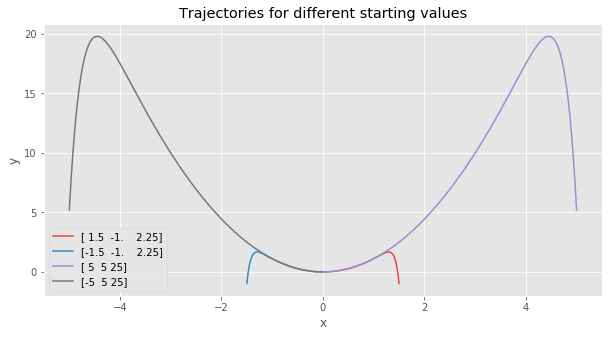
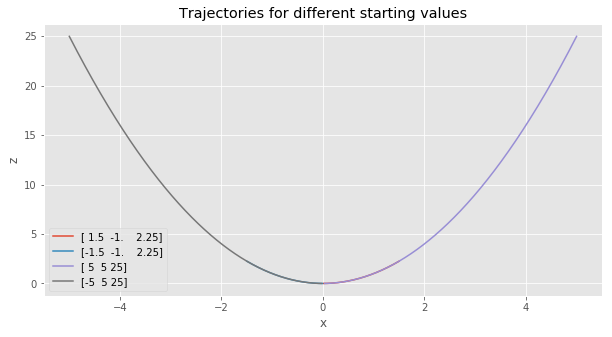
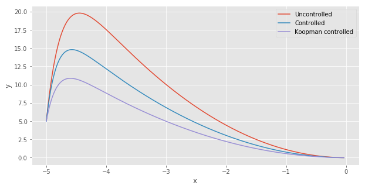
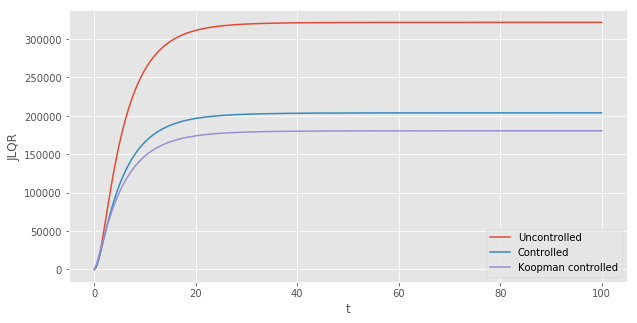

This notebook builds upon what has been described in Part I. In Part I, we introduced the linear–quadratic regulator (LQR) framework in Python. We solved the linearized control problem.
In this notebook, we will see that we can do better. The basic idea is to follow the the evolution of “observables” — functions of the state space — instead of the evolution of the state itself using the Koopman operator. In the space of observables, the differential equation is linear. Thus, we can solve for the optimal control in the this transformed space, without having to linearize the system around its steady-state.
In this notebook, you will learn:
- the basics on the Koopman operator
- how to solve for the optimal control in the Koopman subspace
I. The Koopman operator 101
Let us remember that in Part I, we analyzed the evolution of the following dynamical system:
$$ \begin{cases} \frac{d}{dt} x = \mu x \\ \frac{d}{dt} y = \lambda (y - x^2) \end{cases} $$
Let’s make the observation that we can defined a new vector $z$ defined by:
$$ z \equiv \begin{pmatrix} z_1 \\ z_2 \\ z_3 \end{pmatrix} = \begin{pmatrix} x \\ y \\ x^2 \end{pmatrix}$$
The original nonlinear dynamical system is linear when considering the evolution of $z$:
$$ \frac{d}{dt} \begin{pmatrix} z_1 \\ z_2 \\ z_3 \end{pmatrix} = \begin{pmatrix} \mu & 0 & 0 \\ 0 & \lambda & -\lambda \\ 0 & 0 & 2 \mu \end{pmatrix} \begin{pmatrix} z_1 \\ z_2 \\ z_3 \end{pmatrix}$$
What we just did — writing the evolution the dynamical system using some observables — is the central idea of the Koopman operator. Here we are lucky because our new variable $z$ is of finite dimension. In the general case, $z$ is infinite-dimensional:
$$ \frac{d}{dt} \begin{pmatrix} z_1 \\ z_2 \\ … \end{pmatrix} = \begin{pmatrix} a_{11} & a_{12} & … \\ a_{21} & a_{22} & … \\ … & … & … \end{pmatrix} \begin{pmatrix} z_1 \\ z_2 \\ … \end{pmatrix} $$
and we have no guarantee that the truncation of z by a finite dimensional counterpart will produce a good approximation of the system. For more detail on this problem, I invite you to read this paper.
Because now the dynamical system is linear, we can directly use the results from LQR framework and solve for the optimal control that minimizes the cost $J$:
$$ J = \int_{0}^{\infty} x’(t) Q x(t) + u’(t) R u(t) dt $$
We already know that the optimal control from the controller is a linear function of the current state of the system:
$$ u = - C_z z$$
When the system is controlled optimally, the equation governing the evolution of the system writes:
$$ \frac{d}{dt} z = A_z z - B C_z z $$
At a later stage, because we want to compare the Koopman controller to the linearized controller, we do not want to penalize the variable $z_3$ for being away from its steady state. The rationale is the variable $z_3$ is “fictive”. We still have in mind that we want to control the “real” variables $x$ and $y$. As a result, the matrix $Q$ we consider is:
$$ \begin{pmatrix} 1 & 0 & 0 \\ 0 & 1 & 0 \\ 0 & 0 & 0 \end{pmatrix} $$
II. Simulating forward the dynamical system
For what follows, you will need the following packages:
import os
import matplotlib.pyplot as plt
plt.style.use('ggplot')
%matplotlib inline
import numpy as np
from control.matlab import * # MATLAB-like functions
#to solve ODE
from scipy import integrate
#show the version of Python I am using:
!python3 --version
Python 3.5.2
Let’s study optimal control for the following differential equation:
$$ \frac{d}{dt} \begin{pmatrix} z_1 \\ z_2 \\ z_3 \end{pmatrix} = \begin{pmatrix} \mu & 0 & 0 \\ 0 & \lambda & -\lambda \\ 0 & 0 & 2 \mu \end{pmatrix} \begin{pmatrix} z_1 \\ z_2 \\ z_3 \end{pmatrix} $$
The following block of code define the parameter values, the matrix A for the linear part of the differential equation and the matrix B specifying that the controller can only act on x. We also specify the time span during which we want to simulate forward the trajectories:
# Parameters and matrices A and B:
mu = -0.05
llambda = -1.0
# Matrices for the orginial system
A = np.array([[mu, 0], [0, llambda]])
B = np.array([[0], [1]])
R = np.array([1])
Q = np.eye(2)
# Matrices for the transformed system:
A_z = np.array([[mu, 0, 0], [0, llambda, -llambda], [0, 0, 2*mu]])
B_z = np.array([[0], [1], [0]])
R_z = np.array([1])
Q_z = np.eye(3)
# Time span
t0, t1 = 0, 100 # start and end
t = np.arange(t0, t1, 0.01)
# Function that defines the dynamic system:
def vdp0(t, y):
# linear part + nonlinear part:
x = A.dot(y) + np.array([0, -llambda*(y[0]**2)])
return x
# Function that defines the dynamic system in the Koopman subspace:
def vdp0z(t, y):
x = A_z.dot(y)
return x
We then define 4 different starting values and simulate forward the system using the scipy.integrate toolkit:
# Set of starting values:
y0A = np.array([1.5, -1, (1.5)**2])
y0B = np.array([-1.5, -1, (-1.5)**2])
y0C = np.array([5, 5, 25])
y0D = np.array([-5, 5, 25])
# To store the different trajectories
list_y_z = []
# Method for the ODE:
# This is an explicit runge-kutta method of order (4)5 due to Dormand & Prince
integrator = "dopri5"
# Loop over the different starting values and calculate trajectories:
for y0 in [y0A, y0B, y0C,y0D]:
# initialize an array to store the solution
y = np.zeros((len(t), len(y0))) # array for solution
r0 = integrate.ode(vdp0z).set_integrator(integrator)
r0.set_initial_value(y0, t0) # initial values
for i in range(1, t.size):
y[i, :] = r0.integrate(t[i]) # get one more value, add it to the array
if not r0.successful():
raise RuntimeError("Could not integrate")
# append the list of solution
list_y_z.append(y)
The next graph shows the trajectory of x and y using the augmented linear system corresponds to the trajectory we found using the nonlinear dynamical system, as expected:
# Plot the different paths:
fig, ax = plt.subplots(figsize=(10, 5))
for index,y0 in enumerate([y0A, y0B, y0C, y0D]):
ax.plot(list_y_z[index][1:-1, 0], list_y_z[index][1:-1, 1], label = str(y0))
plt.xlabel("x")
plt.ylabel("y")
plt.title("Trajectories for different starting values")
plt.legend()
plt.show()

The next graph shows that the dynamical system moves along a nice parabola in the third dimension:
# Plot the different paths:
fig, ax = plt.subplots(figsize=(10, 5))
for index,y0 in enumerate([y0A, y0B, y0C, y0D]):
ax.plot(list_y_z[index][1:-1, 0], list_y_z[index][1:-1, 2], label = str(y0))
plt.xlabel("x")
plt.ylabel("z")
plt.title("Trajectories for different starting values")
plt.legend()
plt.show()

III. Solving for the optimal control
Let us remember that our aim is find the matrix $C_z$ defining the optimal control:
$$ u = - C_z z $$
Interestingly, while the optimal $u$ is linear when considering $z$, it is quadratic when considering the original vector of state $x$:
$$ u = - (C_{z,1} C_{z,2}) \begin{pmatrix} x \\ y \end{pmatrix} - C_{z,3} x^2 $$
We will see in a minute that having a non-linear control allows us to outperform the linear control obtained in Part I.
# Solve for C:
(C, X, E) = lqr(A, B, Q, R)
print("Feedback matrix C : {}".format(C))
# Solve for C_z:
(C_z, X_z, E_z) = lqr(A_z, B_z, Q_z, R_z)
print("Feedback matrix C_z : {}".format(C_z))
Feedback matrix C : [[0. 0.41421356]]
Feedback matrix C_z : [[0. 0.41421356 0.27355029]]
We can now proceed as previously to simulate forward the differential equation. The only difference is that
now we have to take into account the optimal control applied each period on the system. The optimal control is
taken into consideration in the function vdp1(t, y):
def vdp1(t, y):
# Ay - B*X*y + Cy
x = A.dot(y) - np.matmul(B,C).dot(y)
return x + np.array([0, -llambda*(y[0]**2)])
def vdp1z(t, y):
return A_z.dot(y) - np.matmul(B_z,C_z).dot(y)
y0 = [-5, 5] # initial value
y0_z = [-5, 5, 25] # initial value
y = np.zeros((len(t), len(y0))) # array for solution
y_z = np.zeros((len(t), len(y0_z))) # array for solution
y[0, :] = y0
y_z[0, :] = y0_z
# Controlled trajectory using the linearized system
r = integrate.ode(vdp1).set_integrator(integrator)
r.set_initial_value(y0, t0) # initial values
for i in range(1, t.size):
y[i, :] = r.integrate(t[i]) # get one more value, add it to the array
if not r.successful():
raise RuntimeError("Could not integrate")
# Controlled trajectory using the linearized system
r = integrate.ode(vdp1z).set_integrator(integrator)
r.set_initial_value(y0_z, t0) # initial values
for i in range(1, t.size):
y_z[i, :] = r.integrate(t[i]) # get one more value, add it to the array
if not r.successful():
raise RuntimeError("Could not integrate")
We can now compare the controlled and Koopman controlled trajectories. Interestingly, the Koopman controlled trajectory moves along a trajectory involving lower values for $y$:
index = 3 #choose the last trajectory
fig, ax = plt.subplots(figsize=(10, 5))
plt.plot(list_y_z[index][1:-1, 0], list_y_z[index][1:-1, 1], label = "Uncontrolled")
plt.plot(y[:, 0], y[:, 1], label = "Controlled")
plt.plot(y_z[:, 0], y_z[:, 1], label = "Koopman controlled")
plt.xlabel("x")
plt.ylabel("y")
plt.legend()
plt.show()

The next logical question is whether or not the Koopman controller is better than the controller based on the linearization of the dynamical system around its steady state. The next plot shows that indeed the Koopman controller (in purple) outperforms the latter (in blue).
# Controlled
JLQR = np.cumsum( np.square(y[:, 0]) + np.square(y[:, 1]) + np.square(np.matmul(C, y.T)) ).T
# Koopman controlled
JLQRz = np.cumsum( np.square(y_z[:, 0]) + np.square(y_z[:, 1]) + np.square(np.matmul(C_z, y_z.T)) ).T
# Uncontrolled
JLQR0 = np.cumsum( np.square(list_y_z[index][:, 0]) + np.square(list_y_z[index][:, 1]) )
fig, ax = plt.subplots(figsize=(10, 5))
plt.plot(t, JLQR0, label = "Uncontrolled")
plt.plot(t, JLQR, label = "Controlled")
plt.plot(t, JLQRz, label = "Koopman controlled")
plt.xlabel("t")
plt.ylabel("JLQR")
plt.legend()
plt.show()

Conclusion
This notebook illustrates the idea behind the Koopman operator in a very simple setting. We saw that by solving for the optimal control in the space of observables, in which the system is exactly linear, we find a controller that outperforms the one obtained by linearizing the system around its steady-state.
The Koopman LQR control drew my attention because many techniques, especially in Economics, are based on the linearization of dynamic systems around its steady-state. While these linearization techniques are accurate when the economy is close to its steady-state (in a “business as usual” situation), it is hard to know how these approximations perform when the economy is an unusual state. Given the current economic context, relying on linearization might be inaccurate.
References
The linear system studied in this notebook is based on the paper: Brunton, Steven L., et al. “Koopman invariant subspaces and finite linear representations of nonlinear dynamical systems for control.” PloS one 11.2 (2016).
Koopman, Bernard O. “Hamiltonian systems and transformation in Hilbert space.” Proceedings of the national academy of sciences of the united states of america 17.5 (1931): 315.